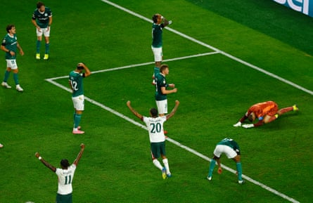
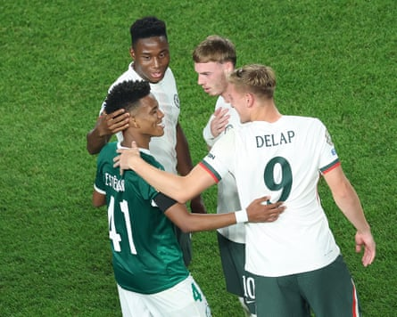

Their place in the last four of the Club World Cup in the bag and the prospect of a £97m windfall still up for grabs, Chelsea found themselves in an unusual position: relieved to have survived a taxing second half, hailing Malo Gusto’s unlikely role as matchwinner and able to delight in the opposition’s goalscorer being named superior player of the match.
For a while the story of this entertaining quarter-final looked like it was going to be about Enzo Maresca finding it within himself to forgive Estêvão Willian. Everything had changed when the Brazilian sensation, who joins Chelsea after this tournament, cancelled out an early goal from Cole Palmer and hauled Palmeiras level at the start of the second half.
Quiet during the first half, Estêvão threatened to take over and send his next team back to England. The consolation for Chelsea was likely to be seeing exactly why they have paid £52m to sign a talent tipped by many good judges to win the Ballon d’Or one day.
Yet that uncomfortable conversation between Estêvão and Maresca was averted thanks to a horrendous error from Weverton seven minutes from time, a deflected cross from Gusto somehow deceiving the Palmeiras goalkeeper and bobbling in. Palmeiras, who have never won this competition, could not believe their misfortune. They lost late to Chelsea in the final three years ago; now they were out thanks to an own-goal from their goalkeeper.
Not that Chelsea cared. The future looks bright. Palmer and Estêvão working in tandem after this tournament? It is a delicious prospect and Chelsea’s owners will have loved the symbolism of the duo embracing at half-time. As for the present, the focus is on reaching next Sunday’s final in New York. Next up are Fluminese, who beat Al-Hilal in the day’s other quarter-final , and that means a reunion with a Brazilian from a different era: the former Chelsea centre-back, Thiago Silva.
There was also rare positive PR for Fifa given that its dynamic pricing model pulled in a bigger crowd than expected and quelled any debate over scheduling this tie on Independence Day. This, after all, was far from the biggest show in town on Friday. Fourth of July festivities tend to be quite a big deal in Philadelphia, the birthplace of American democracy, and anyone looking for ways to mark the holiday could choose from Major League Baseball at nearby Citizens Bank Park, free concerts and a fireworks show in the city centre.
Palmeiras goalkeeper Weverton reacts after fumbling Malo Gusto’s tame shot into the net for Chelsea’s second goal.Photograph: Susana Vera/Reuters
But prices dropping as low as $11.15 (£8.17) ensured there was a decent attendance at Lincoln Financial Field, where attention was on the weirdness of Estêvão playing his future employers. What to do? In Marc Cucurella’s case it was to stick tight to the teenager and kick him at every opportunity. It was as if the left-back was determined to show Estêvão what it will be like in the Premier League. The challenges were physical and there was even a blast of fury from Cucurella after Estêvão had a nibble at Levi Colwill midway through the first half.
Chelsea were aggressive. The worry for Maresca was how his midfield would function without the suspended Moises Caicedo and the injured Romeo Lavia. Enzo Fernandez moved deeper but there was another rejig when Reece James suffered an injury during the warm-up, forcing Maresca to hand a first start to Andrey Santos.
In that context, perhaps it was not a surprise when Chelsea grew a little ragged in the second half. Making up for the absence of Caicedo’s power and Lavia’s elegance was not easy for Santos. The 21-year-old Brazilian is still adjusting to Maresca’s system after an impressive loan spell at Strasbourg, although this was still an encouraging first step. Playing in a deeper role, Santos asked for the ball, got stuck in and did not hide when the game got tough after half-time.
Palmeiras forward Estêvão speaks with future Chelsea teammates after the 2025 Club World Cup quarter-final.Photograph: Charly Triballeau/AFP/Getty Images
Palmeiras, who were without key figures in defence, had struggled at first. Maresca had left it up to Pedro Neto to decide if he wanted to play after the death of his friend and Portugal team-mate Diogo Jota. Neto was excused from training on Thursday and it would not have been a surprise if the winger had accepted the offer of compassionate leave.
Instead, though, the 25-year-old lined up on the right wing and was soon giving Micael the run around. Palmer, playing as a No 10, was just as elusive. Sixteen minutes in, he moved to the right, took a pass from Trevoh Chalobah and turned. The outcome was inevitable. Palmer swerved on to his left foot, held off a couple of challenges and threaded a low shot into the right corner from 20 yards.
Chelsea remained on top. They should have scored again, only for Christopher Nkunku to shoot over. There was a lull as half-time approached. Richard Rios had an opening for Palmeiras. Liam Delap ruled himself out of the semi-final after picking up a booking.
The mind went back to Chelsea blowing a half-time lead against Flamengo during the group stage. The Brazilian teams are not to be underestimated. Palmeiras emerged with more intensity at the start of the second half. The narrative turned in the 53rd minute. There was a clever pass from the right from Rios. Estêvão nipped in, stepping past Colwill, and then came the demonstration of his unique talent: the daring to shoot from such a tight angle, the bravery to take it with his weaker right foot, and the technique to catch Robert Sanchez out at his near post, the ball flying past the Chelsea goalkeeper and going in off the bar.
Maresca responded by removing Delap for Joao Pedro and bringing Noni Madueke on for the disappointing Nkunku. Chelsea rallied. Joao Pedro, who has only had a couple of training sessions since joining from Brighton this week , looked bright. Madueke brought more drive on the left.
The game flew from end to end. Palmeiras were too open. Chelsea kept working themselves into promising positions, although the nature of the winning goal owed more to luck than judgement, Gusto squeezing in a cross, the ball changing course and Weverton not reacting in time.